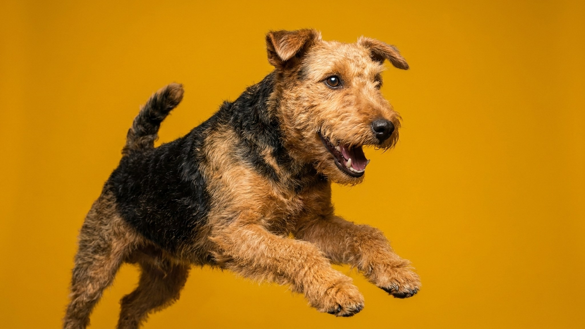

Вельштерьер выглядит как уменьшенный эрдель: те же рыже-чёрные тона, та же борода, тот же прямой взгляд. Разница не только в размере: Welsh Terrier сохранил рабочий охотничий инстинкт норной собаки в городском теле. Без понимания этого характера собака быстро начинает придумывать себе занятия сама — и не всегда удобные для хозяина.
🐾 У вас вельштерьер?
AnimaLife соберёт уход под породу: к каким болезням есть склонность, что проверять по возрасту, чем кормить и когда пора к врачу. Бесплатно, прямо в мессенджере.
Собрать план ухода → Собрать в MAX →
У вас iPhone? AnimaLife есть в App Store
Вельштерьер (Welsh Terrier) заметно меньше эрдельтерьера: рост около 38–39 см в холке, вес 9–10 кг против 25–30 кг у эрдела. Снаружи похожи, но это отдельная порода с собственной историей охоты на лису, выдру и барсука в Уэльсе.
От лейкленд-терьера вельштерьер немного крупнее и чуть мягче в общении с людьми, хотя оба сохранили терьерский нрав. Если вам нравится тип, но пугает размер эрдела, вельштерьер — разумный выбор, а не компромисс.
Жёсткая проволокообразная шерсть — не декоративная деталь. Её структура защищает собаку в кустах и от непогоды. Стрижка машинкой разрушает этот тип шерсти: через несколько стрижек она становится мягкой, теряет цвет и перестаёт выполнять защитную функцию.
Вельштерьер подвижен, любознателен и упрям. Он прекрасно обучается, но делает это по своим правилам: если не понимает смысл команды, предпочтёт заняться чем-то интереснее. Ранняя социализация с первых недель дома позволяет сгладить резкость характера и снизить реакцию на других собак.
Охотничий инстинкт сохранён: кошку или мелкое животное вельштерьер может воспринять как дичь. Важно знакомить его с домашними питомцами с детства и контролировать реакции на прогулке. Апорт, нюховые игры, аджилити хорошо загружают голову и снижают уровень «самодеятельности» дома.
Для активной семьи, которая готова к двум прогулкам в день с элементами игры или тренировки, вельштерьер отлично впишется даже в квартиру. Пассивный образ жизни ему не подойдёт.
Вельштерьеры в целом выносливые, но с возрастом стоит отслеживать состояние кожи и шерсти: изменения структуры покрова или появление участков раздражения — повод для планового осмотра. Суставы у небольших активных собак работают с нагрузкой, поэтому любая хромота или скованность после сна заслуживают внимания ветеринара, а не выжидания. Регулярные профилактические визиты один-два раза в год помогают держать здоровье под контролем.
🐾 Ваш питомец — вельштерьер?
Заведите профиль в AnimaLife: приложение запомнит породу, возраст и вес и будет подсказывать по уходу именно для неё. Вопросы AI-ветеринару — круглосуточно и бесплатно.
Завести профиль → Завести в MAX →
У вас iPhone? AnimaLife есть в App Store
🐾 Понравился разбор?
Подпишитесь на канал — каждый день разбираем по одному тревожному симптому у кошек и собак: что в пределах нормы, а когда пора к врачу. Подпишитесь, чтобы не пропустить разбор, который может спасти здоровье вашего питомца.
Материал носит информационный характер и не заменяет очную консультацию ветеринара.